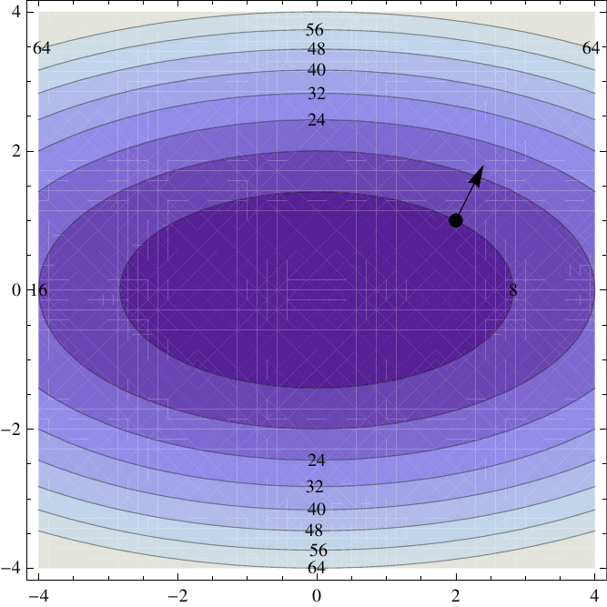

Section 14.6: Directional Derivatives and the Gradient Vector
Partial Derivatives
MTH 310
Calculus III
Directional Derivatives — Motivation
We already know two rates of change for \(f(x,y)\):
- \(f_x\) = rate of change in the x-direction (holding \(y\) fixed)
- \(f_y\) = rate of change in the y-direction (holding \(x\) fixed)
But what if we want the rate of change in some other direction?
For example, northwest? At a \(45°\) angle? Along a contour line?
In fact, \(f_x\) and \(f_y\) are just special cases:
- \(f_x(x,y) = D_{\vec{i}}\, f(x,y)\) — directional derivative in the \(\vec{i}\) direction
- \(f_y(x,y) = D_{\vec{j}}\, f(x,y)\) — directional derivative in the \(\vec{j}\) direction
Definition of the Directional Derivative
Directional Derivative
Let \(\vec{u} = \langle a, b \rangle\) be a unit vector (\(|\vec{u}| = 1\)). The directional derivative of \(f\) at \((x,y)\) in the direction of \(\vec{u}\) is:
\[D_{\vec{u}} f(x,y) = \lim_{t \to 0} \frac{f(x + ta,\; y + tb) - f(x,y)}{t}\]
provided this limit exists.
Reading the formula:
- Start at \((x, y)\)
- Move a tiny step \(t\) in the direction \(\vec{u} = \langle a, b \rangle\), arriving at \((x + ta,\; y + tb)\)
- Measure the change in \(f\), divide by \(t\), take the limit
Example 1: \(D_{\vec{u}} f\) from the Definition
Example 1
Let \(f(x,y) = x^2 + 4y^2\) and \(\vec{u} = \left\langle \frac{\sqrt{2}}{2},\; \frac{\sqrt{2}}{2} \right\rangle\).
Find \(D_{\vec{u}} f(2, 1)\) using the limit definition.
The Gradient Vector
Before we find the shortcut, we need a new object.
Gradient Vector
If \(f\) has partial derivatives \(f_x\) and \(f_y\), the gradient of \(f\) is the vector:
\[\nabla f(x,y) = \langle f_x(x,y),\; f_y(x,y) \rangle = f_x\,\vec{i} + f_y\,\vec{j}\]
The symbol \(\nabla\) is called nabla or del.
The gradient packages both partial derivatives into a single vector. It lives in the domain (the \(xy\)-plane), not on the surface.
Example 2
Find \(\nabla f\) for \(f(x,y) = x^2 + 4y^2\). Then evaluate \(\nabla f(2,1)\).
The Big Theorem: \(D_{\vec{u}} f = \nabla f \cdot \vec{u}\)
Theorem: Directional Derivative via the Gradient
If \(f\) is a differentiable function of \(x\) and \(y\), then:
\[D_{\vec{u}} f(x,y) = \nabla f(x,y) \cdot \vec{u}\]
for any unit vector \(\vec{u}\).
Translation: To find the rate of change in any direction, just take the dot product of the gradient with the direction vector.
Why is this so much better than the definition?
- Limit definition: expand, simplify, take a limit (messy algebra)
- Gradient formula: compute two partial derivatives, take a dot product (fast!)
Example 3: \(D_{\vec{u}} f\) via the Gradient
Example 3
Same problem as Example 1: \(f(x,y) = x^2 + 4y^2\), \(\vec{u} = \left\langle \frac{\sqrt{2}}{2},\; \frac{\sqrt{2}}{2} \right\rangle\).
Find \(D_{\vec{u}} f(2,1)\) using the gradient.
Maximizing the Directional Derivative
Question: You're standing at a point \((a, b)\) in the domain of \(f\). Which direction should you move to increase \(f\) as fast as possible?
Using the dot product identity:
\[D_{\vec{u}} f = \nabla f \cdot \vec{u} = |\nabla f|\;|\vec{u}|\;\cos\theta = |\nabla f|\;\cos\theta\]
where \(\theta\) is the angle between \(\nabla f\) and \(\vec{u}\).
The only thing we can control is the angle \(\theta\). The gradient \(\nabla f\) is fixed at each point.
So maximizing \(D_{\vec{u}} f\) comes down to maximizing \(\cos\theta\):
Summary: Three Key Cases
| Condition | Angle \(\theta\) | \(D_{\vec{u}} f\) | Meaning |
|---|---|---|---|
| \(\vec{u}\) parallel to \(\nabla f\) | \(0\) | \(|\nabla f|\) (max) | Fastest increase |
| \(\vec{u}\) opposite to \(\nabla f\) | \(\pi\) | \(-|\nabla f|\) (min) | Fastest decrease |
| \(\vec{u} \perp \nabla f\) | \(\pi/2\) | \(0\) | No change (along level curve) |
Important clarification: The gradient vector \(\nabla f\) lives in the domain (the \(xy\)-plane). It is NOT a vector "pointing uphill on the surface." It points toward larger \(f\)-values in the input space.
Example 4: Fastest Increase and Decrease
Example 4
For \(f(x,y) = x^2 + 4y^2\) at the point \((2,1)\):
(a) What direction gives the fastest increase in \(f\)? How fast?
(b) What direction gives the fastest decrease?
(c) In what directions is \(D_{\vec{u}} f = 0\)?
Example 5: Predicting Change with the Gradient
Example 5
Continued from Example 4: If you travel a distance of \(0.1\) from \((2,1)\) in the direction of \(\nabla f\), predict the change \(dz\) in \(z = f(x,y)\).
Your Turn: Directional Derivative Practice
Example 6
Let \(f(x,y) = xe^{-y}\) and let \(\vec{u}\) be the unit vector in the direction of \(\langle 2, -1 \rangle\).
(a) Find \(\nabla f(2, 0)\).
(b) Find \(D_{\vec{u}} f(2, 0)\).
(c) What is the maximum rate of change of \(f\) at \((2, 0)\)?
Gradient Is Perpendicular to Level Curves
Theorem: Gradient Perpendicular to Level Curves
The gradient vector \(\nabla f(a,b)\) is perpendicular to the level curve \(f(x,y) = k\) at the point \((a,b)\).
Why does this make sense?
Along a level curve, \(f\) is constant, so the rate of change is zero. We saw that \(D_{\vec{u}} f = 0\) when \(\vec{u} \perp \nabla f\).
The tangent direction to a level curve is a direction of zero change — so it must be perpendicular to \(\nabla f\).

Example 7: Tangent Line to a Level Curve
Example 7
Consider \(f(x,y) = x^2 + 4y^2\) with level curves that are ellipses.
At the point \((2, 1)\), find the equation of the tangent line to the level curve \(f(x,y) = 8\).
Extending to Three Variables
Everything generalizes naturally to functions of three variables \(f(x, y, z)\):
Gradient in Three Variables
\[\nabla f(x,y,z) = \langle f_x,\; f_y,\; f_z \rangle\]
The directional derivative formula is exactly the same:
\[D_{\vec{u}} f(x,y,z) = \nabla f(x,y,z) \cdot \vec{u}\]
where \(\vec{u} = \langle a, b, c \rangle\) is a unit vector in \(\mathbb{R}^3\).
Level surfaces replace level curves:
For \(f(x,y,z) = k\), the gradient \(\nabla f\) is perpendicular to the level surface at each point.
Example 8: Tangent Plane to a Level Surface
Example 8
Let \(f(x,y,z) = zx^2 - yz^2\).
(a) Compute \(\nabla f(1, 2, 3)\).
(b) Find the equation of the tangent plane to the level surface \(f(x,y,z) = -15\) at the point \((1, 2, 3)\).